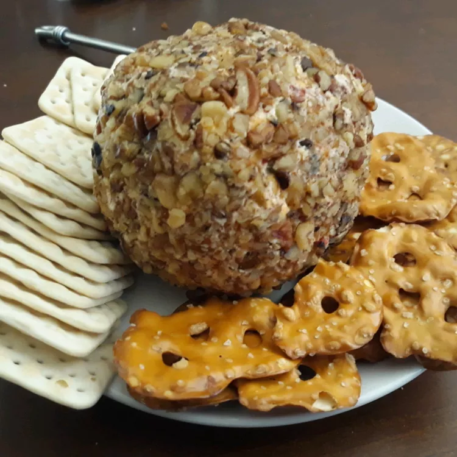

Party Cheeseball

Description
Serve this Philadelphia cream cheese ball on special occasions with whole wheat crackers, pita chips, and cut-up celery.
Ingredients
- 8 ounce packages Philadelphia cream cheese softened
- 8 ounce packages Kraft shredded sharp Cheddar cheese
- 1 tablespoon finely chopped onion
- 1 tablespoon chopped red bell pepper
- 2 teaspoons Worcestershire sauce
- 1 teaspoon lemon juice
- 1 dash ground red pepper
- 1 dash salt
- 1 cup chopped Planters pecans
Steps
- Beat cream cheese and Cheddar cheese in a bowl with an electric mixer on medium speed until well blended. Mix in onion, bell pepper, Worcestershire sauce, lemon juice, cayenne pepper, and salt. Cover and refrigerate for 3 hours or overnight.
- Remove from the refrigerator and shape into a ball. Roll in pecans and place onto a serving plate.
Back to home